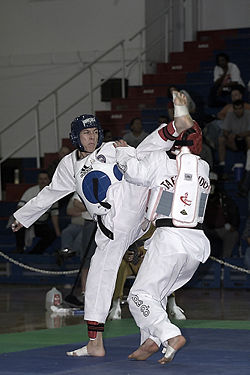

 |
O nome "taekwondo" se origina da fusão de três ideogramas coreanosː
Em sentido global, taecondô indica a técnica de combate sem armas para defesa pessoal, envolvendo destreza no emprego das mãos e punhos, de chutes voadores, de esquivas e interseções de golpes com as mãos, braços ou pés, para a rápida destruição do oponente. Hoje em dia, o Taekwondo tornou-se olímpico, e, em muitas academias, pratica-se o Taekwondo olímpico. Basicamente, é um desporto de chutes com muito poder de explosão.
|